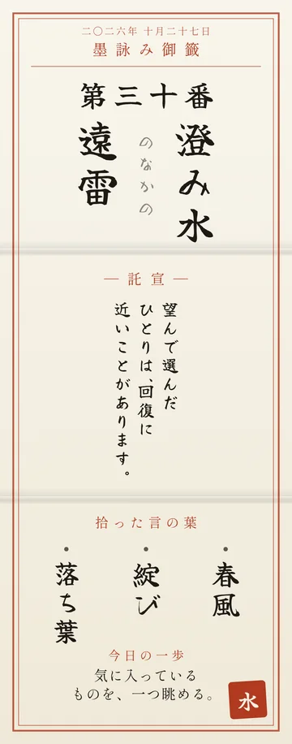
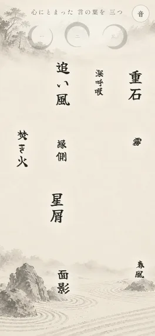
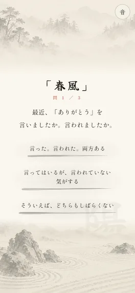
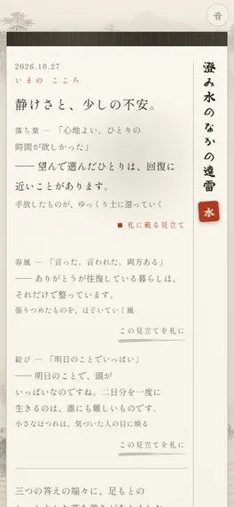

墨詠み
すみよみ
なんでこんな気分か自分でもよく分からない日に
こんな人のために
疲れているのか、不安なのか、寂しいのか。自分でもよく分からない 人に相談するほどではないけれど、少し引っかかっている 日記を書いてみたいのに、最初の一行が出てこない
書かずに、気持ちを言葉に

つかいかた
-
庭で言葉を三つ拾う

入口の「庭へ入る」を押すと、言葉が浮かんでは消えていきます。気になったものを直感で三つ。タップするだけです。 -
短い問いに答える

拾った言葉ごとに問いが出ます。三つの答えから、いちばん近いものを選ぶだけ。全部で2〜3問です。 -
いまの気持ちが言葉になる

いまの気持ちの説明と、今日の一歩が届きます。気に入ったら札にして残せます。
気になることへの答え
名前もメールアドレスも、登録はいりません 選んだ言葉や答えは、自分で札を送らないかぎり外に出ません。数えているのは訪問やボタンを押した回数で、だれのものかは分かりません 返ってくる言葉は、その場でAIが作る文ではありません。用意した文から、答えに合わせて選んで組み立てています スマホ向けにつくっています。パソコンでも動きます